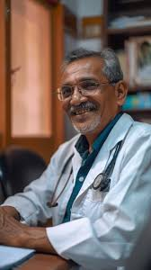
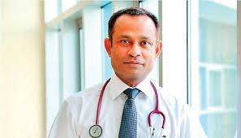
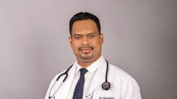
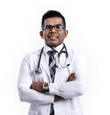

Dr. Amili De Alwis
Dr. Amili De Alwis is a highly experienced cardiologist with a passion for providing comprehensive heart care. Over her 15 years of practice, she has treated numerous complex cases and is known for her patient-centered approach. She is also actively involved in research on cardiovascular diseases.

Dr. K.A. Salvin
Dr. K.A. Salvin has dedicated his career to pediatric healthcare, ensuring the wellbeing of children from infancy to adolescence. His calm demeanor and expertise in childhood illnesses have earned him the trust of countless families.

Dr. Krishan Venkat
Dr. Krishan Venkat is an accomplished orthopedic surgeon specializing in joint replacement surgeries. He combines his extensive experience with the latest medical advancements to provide the best care for his patients.
Dr. Malki de Soysa
With over 20 years of experience, Dr. Malki de Soysa is a leading neurologist known for her expertise in treating complex neurological disorders. Her patient-first approach and commitment to research have helped improve many lives.

Dr. Nuwan Thilak
Dr. Nuwan Thilak is a compassionate OB-GYN with a decade of experience in women's healthcare. He is passionate about providing care for women during pregnancy and childbirth and offers a range of reproductive health services.

Dr. Charitha Fonseka
Dr. Charitha Fonseka is a highly skilled dermatologist with a focus on both cosmetic and medical dermatology. He has treated various skin conditions, from acne to skin cancer, and believes in personalized care for each patient.
Dr. Arjun Khanthiban
Dr. Arjun Khanthiban is a highly regarded general surgeon with over 16 years of experience. He is known for his precision in the operating room and his compassionate care, performing a wide range of surgeries with excellent outcomes.

Dr. Kumara Jayakody
Dr. Kumara Jayakody specializes in diagnosing and treating hormonal disorders, including diabetes, thyroid conditions, and metabolic imbalances. She is passionate about helping patients manage chronic conditions with individualized care plans.
Dr. Fathima Jaffer
Dr. Fathima Jaffer is a leading gastroenterologist with expertise in treating digestive system disorders such as IBS, Crohn’s disease, and liver conditions. Her commitment to patient education and preventive care sets her apart.